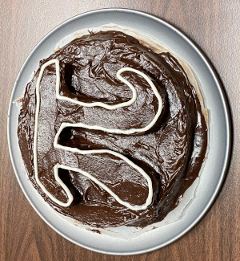
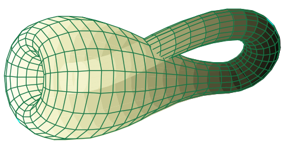

| Twelfth Homework Assignment : (Due Tuesday, 29 November 2022) Here is a pdf of the assignment, and the LaTeX source. |
| Eleventh Homework Assignment : (Due Tuesday, 22 November 2022)
Here is a pdf of the assignment, and the LaTeX source. |
| Tenth Homework Assignment : (Due Tuesday, 15 November 2022)
Here is a pdf of the assignment, and the LaTeX source. |
| Ninth Homework Assignment : (Due Tuesday, 8 November 2022)
Here is a pdf of the assignment, and the LaTeX source. |
| Eighth Homework Assignment : (Due Tuesday, 1 November 2022)
Here is a pdf of the assignment, and the LaTeX source. |
| Seventh Homework Assignment : (Due Tuesday, 25 October 2022)
Here is a pdf of the assignment, and the LaTeX source. |
| Third Written Assignment Your third written assignment involves researching the mathematical constant π, and then writing a short essay/discussion about a small part of what you learned. I'd recommend starting with the Wikipedia article, and then follow up with some videos and other sources, as you research something that catches your attention. Above all, enjoy what you find out about π. The assignment is due Thursday 3 November 2022. |

|
| Sixth Homework Assignment : (Due Tuesday, 18 October 2022)
Here is a pdf of the assignment, and the LaTeX source. |
| Fifth Homework Assignment : (Due Thursday, 6 October 2022)
Here is a pdf of the assignment, and the LaTeX source. |
| Fourth Homework Assignment : (Due Tuesday, 27 September 2022)
Here is a pdf of the assignment, and the LaTeX source. |
| Second Written Assignment Your second written assignment involves researching Klein Bottles, and then writing a short essay/discussion about Klein bottles. Here are some sources to get you started, you should look up several other sources about Klein bottles. Above all, enjoy these and the others that you find. The assignment is due Thursday 6 October 2022. |  |
| Third Homework Assignment : (Due Tuesday, 20 September 2022) Here is a pdf of the assignment, and the LaTeX source. |
| Second Homework Assignment : (Due Tuesday, 13 September 2022) Here is a pdf of the assignment, and the LaTeX source. |
| First Homework Assignment : (Due Tuesday, 6 September 2022) Here is a pdf of the assignment, and the LaTeX source. |
| First Written Assignment : (Due Thursday, 1 September 2022) (1) Read Chapter 0 from our book on Communicating Mathematics. (2) Watch several Numberphile or 3Blue1Brown or Mathologer videos. (3) Write at a paragraph or two on your favorite one; indicating what it was about and what you learned. (4) Write a short recommendation about a second one. Here is a pdf of the assignment, and the LaTeX source. |
| Zeroth Assignment: Read the course web page, and send Frank a private note on Piazza that you have read and understood the course descriptions and policies. This includes signing up on Piazza (The access code is the first perfect number of digits of the circular constant π). Please also answer the following questions: (1) Why are you taking this course? (2) What do you hope to get out of this course? (3) Is there anything else that you want to tell me (that is relevant to the course)? |
Last modified: Sun Nov 13 09:24:25 CST 2022 by sottile